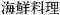

Working with UnicodeUnicode is a character encoding standard that supports most of the world's writing systems. The original idea behind Unicode is that by using 16 bits for storing characters instead of 8 bits, it would be possible to encode around 65,000 characters instead of only 256.[*] Unicode contains ASCII and ISO 8859-1 (Latin-1) as subsets at the same code positions. For example, the character 'A' has value 0x41 in ASCII, Latin-1, and Unicode, and the character 'Â' has value 0xD1 in both Latin-1 and Unicode.
Qt's QString class stores strings as Unicode. Each character in a QString is a 16-bit QChar rather than an 8-bit char. Here are two ways of setting the first character of a string to 'A': str[0] = 'A'; str[0] = QChar(0x41); If the source file is encoded in Latin-1, specifying Latin-1 characters is just as easy: str[0] = 'Ñ'; And if the source file has another encoding, the numeric value works fine: str[0] = QChar(0xD1); We can specify any Unicode character by its numeric value. For example, here's how to specify the Greek capital letter sigma ('S') and the euro currency symbol (' € '): str[0] = QChar(0x3A3); str[0] = QChar(0x20AC); The numeric values of all the characters supported by Unicode are listed at http://www.unicode.org/standard/. If you rarely need non-Latin-1 Unicode characters, looking up characters online is sufficient; but Qt provides more convenient ways of entering Unicode strings in a Qt program, as we will see later in this section. Qt 4's text engine supports the following writing systems on all platforms: Arabic, Chinese, Cyrillic, Greek, Hebrew, Japanese, Korean, Lao, Latin, Thai, and Vietnamese. It also supports all the Unicode 4.1 scripts that don't require any special processing. In addition, the following writing systems are supported on X11 with Fontconfig and on recent versions of Windows: Bengali, Devanagari, Gujarati, Gurmukhi, Kannada, Khmer, Malayalam, Syriac, Tamil, Telugu, Thaana (Dhivehi), and Tibetan. Finally, Oriya is supported on X11, and Mongolian and Sinhala are supported on Windows XP. Assuming that the proper fonts are installed on the system, Qt can render text using any of these writing systems. And assuming that the proper input methods are installed, users will be able to enter text that uses these writing systems in their Qt applications. Programming with QChar is slightly different from programming with char. To obtain the numeric value of a QChar, call unicode() on it. To obtain the ASCII or Latin-1 value of a QChar (as a char), call toLatin1(). For non-Latin-1 characters, toLatin1() returns '\0'. If we know that all the strings in a program are ASCII, we can use standard <cctype> functions like isalpha(), isdigit(), and isspace() on the return value of toLatin1(). However, it is generally better to use QChar's member functions for performing these operations, since they will work for any Unicode character. The functions QChar provides include isPrint(), isPunct(), isSpace(), isMark(), isLetter(), isNumber(), isLetterOrNumber(), isDigit(), isSymbol(), isLower(), and isUpper(). For example, here's one way to test that a character is a digit or an uppercase letter:
if (ch.isDigit() || ch.isUpper())
...
The code snippet works for any alphabet that distinguishes between uppercase and lowercase, including Latin, Greek, and Cyrillic. Once we have a Unicode string, we can use it anywhere in Qt's API where a QString is expected. It is then Qt's responsibility to display it properly and to convert it to the relevant encodings when talking to the operating system. Special care is needed when we read and write text files. Text files can use a variety of encodings, and it is often impossible to guess a text file's encoding from its contents. By default, QTextStream uses the system's local 8-bit encoding (available as QTextCodec::codecForLocale()) for both reading and writing. For American and West European locales, this usually means Latin-1. If we design our own file format and want to be able to read and write arbitrary Unicode characters, we can save the data as Unicode by calling
stream.setCodec("UTF-16");
stream.setGenerateByteOrderMark(true);
before we start writing to the QTextStream. The data will then be saved in UTF-16, a format that requires two bytes per character, and will be prefixed with a special 16-bit value (the Unicode byte order mark, 0xFFFE) identifying that the file is in Unicode and whether the bytes are in little-endian or big-endian order. The UTF-16 format is identical to the memory representation of a QString, so reading and writing Unicode strings in UTF-16 can be very fast. However, there is an inherent overhead when saving pure ASCII data in UTF-16 format, since it stores two bytes for every character instead of just one. Other encodings can be specified by calling setCodec() with an appropriate QTextCodec. A QTextCodec is an object that converts between Unicode and a given encoding. QTextCodecs are used in a variety of contexts by Qt. Internally, they are used to support fonts, input methods, the clipboard, drag and drop, and file names. But they are also available to us when we write Qt applications. When reading a text file, QTextStream detects Unicode automatically if the file starts with the byte order mark. This behavior can be turned off by calling setAutoDetectUnicode(false). If the data can't be assumed to start with the byte order mark, it is best to call setCodec() with "UTF-16" before reading. Another encoding that supports the whole of Unicode is UTF-8. Its main advantage over UTF-16 is that it is a superset of ASCII. Any character in the range 0x00 to 0x7F is represented as a single byte. Other characters, including Latin-1 characters above 0x7F, are represented by multi-byte sequences. For text that is mostly ASCII, UTF-8 takes up about half the space consumed by UTF-16. To use UTF-8 with QTextStream, call setCodec() with "UTF-8" as the codec name before reading and writing. If we always want to read and write Latin-1 regardless of the user's locale, we can set the "ISO 8859-1" codec on the QTextStream. For example:
QTextStream in(&file);
in.setCodec("ISO 8859-1");
Some file formats specify their encoding in their header. The header is typically plain ASCII to ensure that it is read correctly no matter what encoding is used (assuming that it is a superset of ASCII). The XML file format is an interesting example of this. XML files are normally encoded as UTF-8 or UTF-16. The proper way to read them in is to call setCodec() with "UTF-8". If the format is UTF-16, QTextStream will automatically detect this and adjust itself. The <?xml?> header of an XML file sometimes contains an encoding argument, for example: <?xml version="1.0" encoding="EUC-KR"?> Since QTextStream doesn't allow us to change the encoding once it has started reading, the right way to respect an explicit encoding is to start reading the file afresh, using the correct codec (obtained from QTextCodec::codecForName()). In the case of XML, we can avoid having to handle the encoding ourselves by using Qt's XML classes, described in Chapter 15. Another use of QTextCodecs is to specify the encoding of strings that occur in the source code. Let's consider for example a team of Japanese programmers who are writing an application targeted primarily at Japan's home market. These programmers are likely to write their source code in a text editor that uses an encoding such as EUC-JP or Shift-JIS. Such an editor allows them to type in Japanese characters seamlessly, so that they can write code like this:
QPushButton *button = new QPushButton(tr(" "));
By default, Qt interprets arguments to TR() as Latin-1. To change this, call the QTextCodec::setCodecForTr() static function. For example:
QTextCodec::setCodecForTr(QTextCodec::codecForName("EUC-JP"));
This must be done before the first call to tr(). Typically, we would do this in main(), immediately after the QApplication object is created. Other strings specified in the program will still be interpreted as Latin-1 strings. If the programmers want to enter Japanese characters in those as well, they can explicitly convert them to Unicode using a QTextCodec:
QString text = japaneseCodec->toUnicode("  ");
Alternatively, they can tell Qt to use a specific codec when converting between const char * and QString by calling QTextCodec::setCodecForCStrings():
QTextCodec::setCodecForCStrings(QTextCodec::codecForName("EUC-JP"));
The techniques described above can be applied to any non-Latin-1 language, including Chinese, Greek, Korean, and Russian. Here's a list of the encodings supported by Qt 4:
For all of these, QTextCodec::codecForName() will always return a valid pointer. Other encodings can be supported by subclassing QTextCodec. |